Composite Manufacturing & Design
Designing and building structural carbon parts end to end: tooling, layup, cure, and the test data that closes the loop. The thread running through this work is treating composites as something you can analyze and optimize from first principles, not just lay up and hope.
Starting from napkin sketches and moving to 3D CAD, the goal each time was a structurally sound, functioning prototype. To get there quickly, we developed an in-house process for fabricating silicone mandrels to prototype hollow composite structures — the tooling that lets a one-off carbon part exist at all. I designed the wheelset and seatpost for the EPIC model family, taking a first-principles approach to validate different cross-sections that maximized impact resistance while minimizing mass.
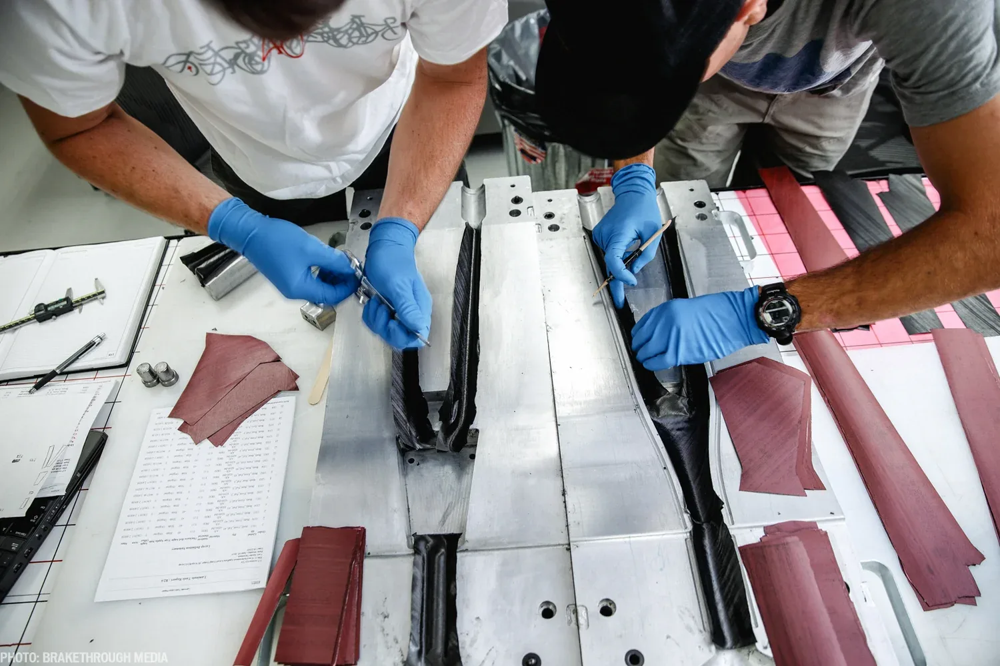
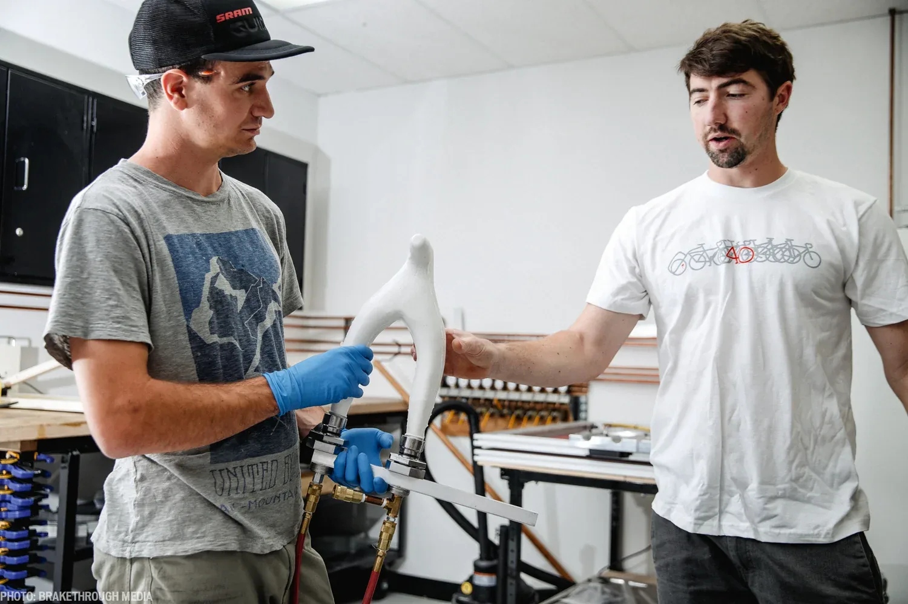
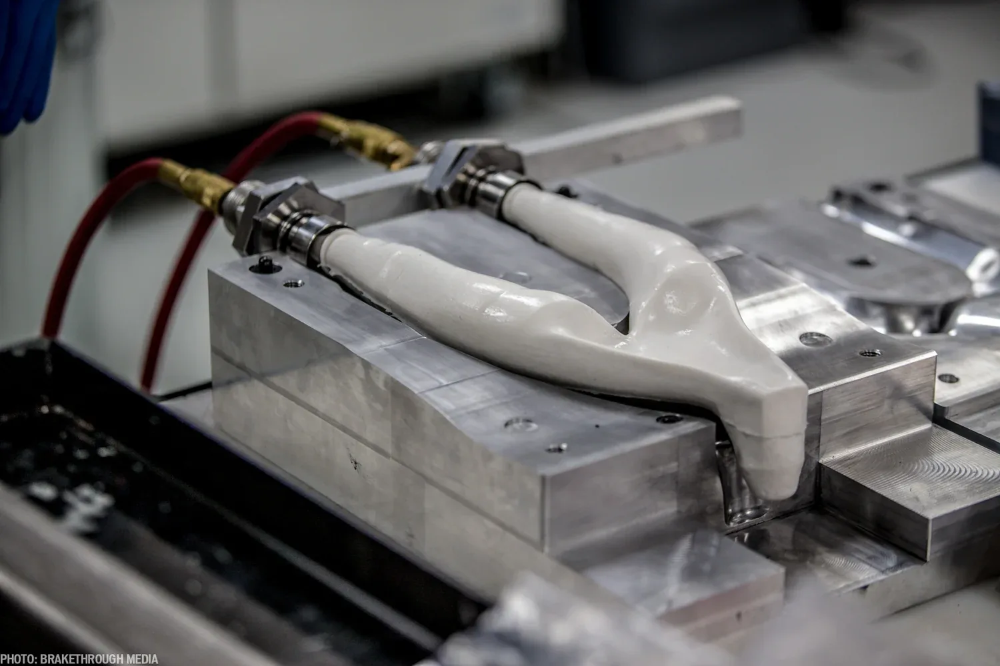
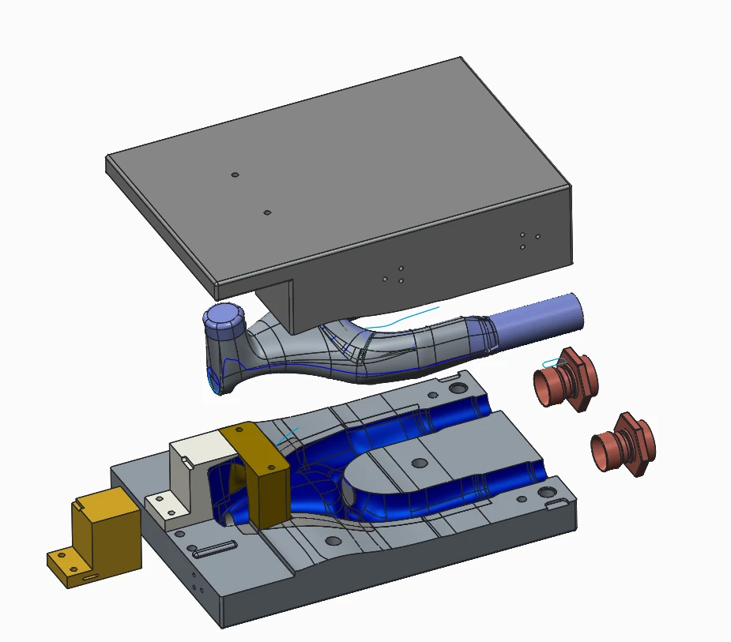
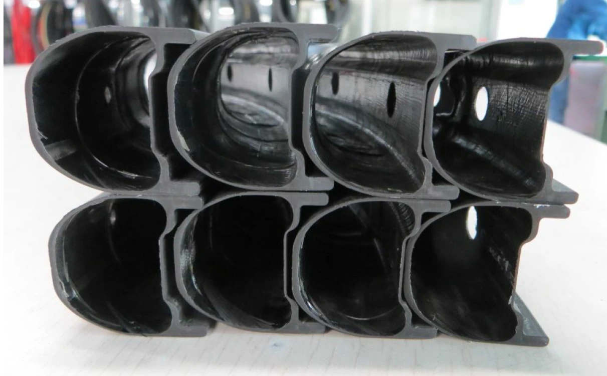
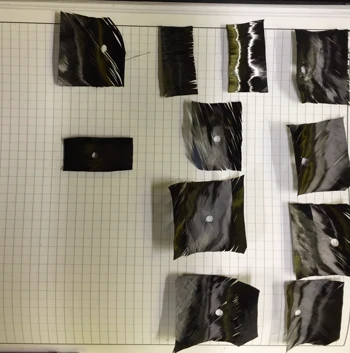
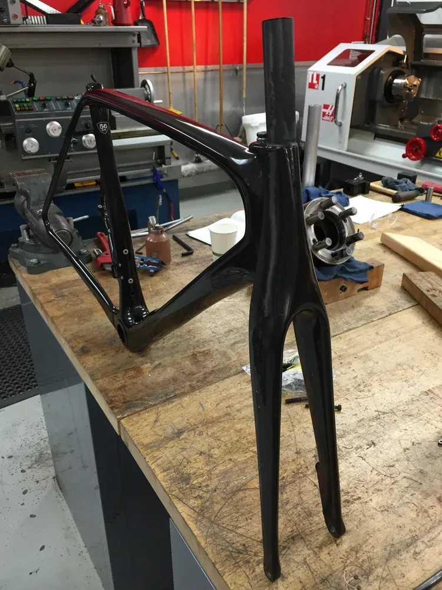
One process innovation: improving the shear-out resistance of composite joints by piercing holes during the minimum-viscosity point of the cure cycle — when the resin is fluid enough to flow around the fibers rather than cutting through them, leaving a far stronger hole.
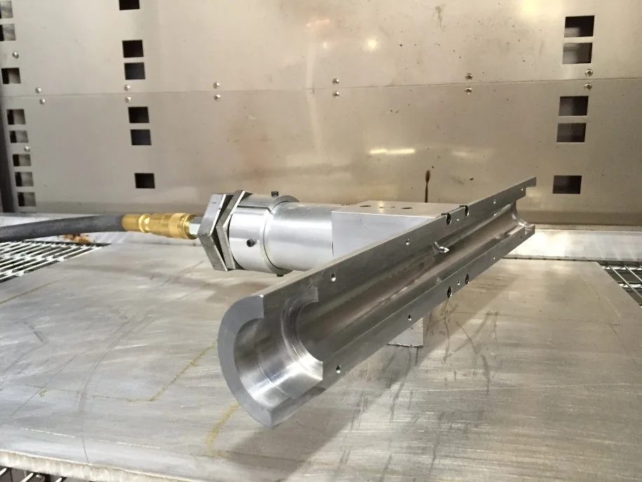
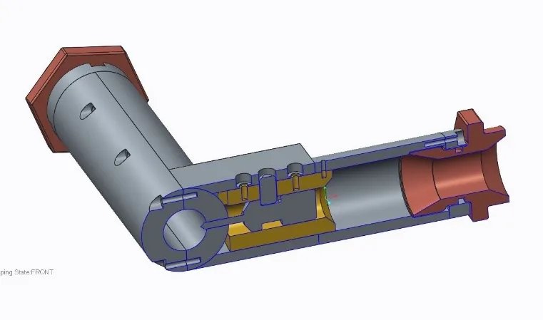
During impact testing, the spoke bed on the previous-generation Control SL failed under a compressive stress. Rather than simply adding material, I ran a design study: varying the cross-section height across a realistic range revealed a minimum stress at an ideal geometry, driving higher impact-energy tolerance without a mass penalty.
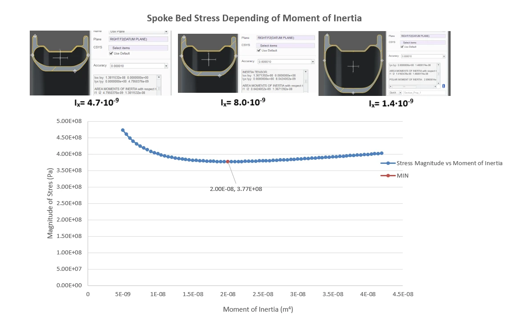
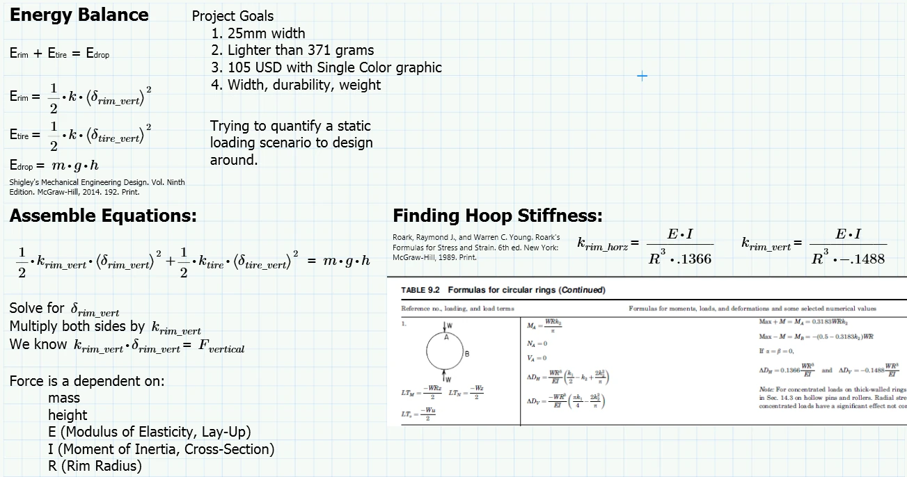
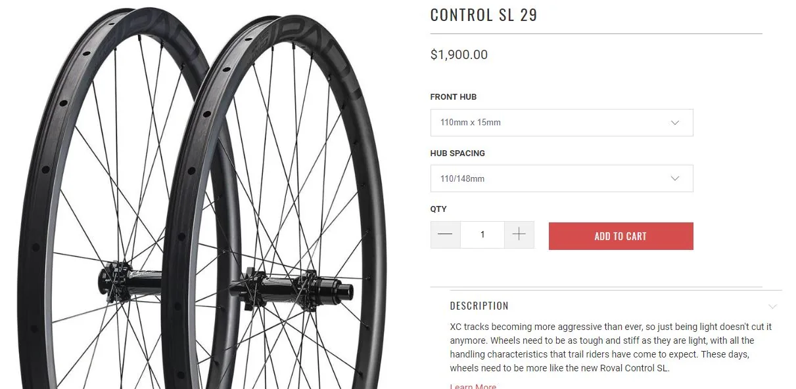
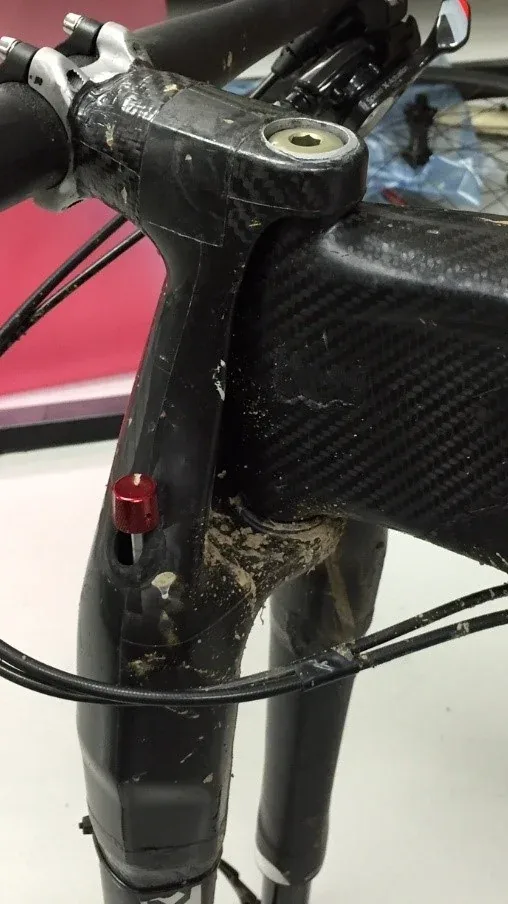
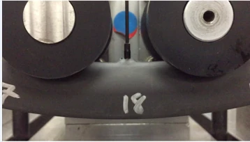
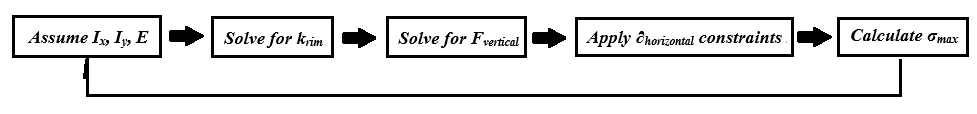